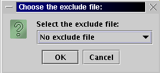
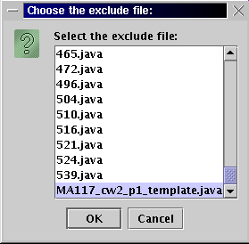

A template file may be given to the students for constructing their submissions, thus there will be many similar lines in the submissions due to their common ancestry. This will cause Sherlock to find many matches, which will slow the process of detection down as the match files are created, fill the files system with the match fields, and cause the visualization of the results to run slowly. The common ancestry can be corrected for by using an 'exclude' file, which is a copy of the template file originally given to the students. Any similar lines found when comparing files which also appear in the excluded are not recorded.
For natural language detection, the exclude file is not as useful. You may wish to construct an exclude file with the title of the essay/report or any common sentences which may occur in all submissions.
To Choose an excluded file
Before pre-process starts
-In the "File type to use" tabbed pane,
-Click "..." button for the excluding file in the "Select exclude file to use
(in source directory)"
-Select the template file name.
-Make sure the template file is input in the source directory.
|  |
 |